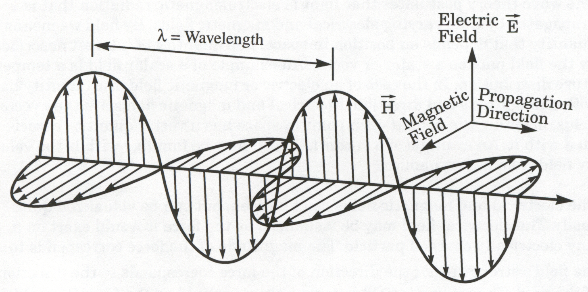

19 The Electromagnetic Spectrum
19.1 Electromagnetic Waves
All energy in the universe radiates in waves. Figure 1 depicts an electromagnetic wave, characterized by an electric field vector \(\left( E \right)\) and a magnetic field vector \(\left( H \right)\) oscillating orthogonal to each other. The electromagnetic wave propagation direction is determined by the right-hand rule and crossing the electric field into the magnetic field as illustrated. The electromagnetic wavelength \(\left( \lambda \right)\) is the distance between two consecutive electric field peaks. The electromagnetic wave frequency \(\left( f \text{ or } \nu \right)\) is inversely proportional to its wavelength. The product of any electromagnetic radiation’s frequency and wavelength equals the speed of light \(\left( c = \lambda \nu \right)\) .

Figure 1 - The Electromagnetic Spectrum
19.2 The Electromagnetic Spectrum
Figure 2 illustrates several concepts related to the electromagnetic spectrum
- Size reference for various wavelengths.
- Numerical relation between wavelength (meters between peaks), wave number (peaks per cm), energy (electron volts), and frequency (Hz).
- Separate frequency bands identified within the overall spectrum.
- Common sources & uses within frequency bands.
Many aircraft and spacecraft systems operate within limited regions of the electromagnetic spectrum. Common examples include radar, electro-optical sensors, radios, data links, electronic warfare, and navigation systems.

19.3 Radio Frequency Electromagnetic Radiation
One of the most heavily used regions of the electromagnetic spectrum is the radio frequency or RF spectrum, from \(\sim 3 \text{ kilohertz}\) to \(\sim 300 \text{ gigahertz}\) . The RF Spectrum encompasses an array of telecommunications devices including radios, television, satellite communications, data links, radio-navigation aids, and radar. Table 1 shows how the RF Spectrum is subdivided into frequency bands.
| Band Designation | Label | Frequency Spread |
|---|---|---|
| Extremely Low Frequency | ELF | \(3 - 30 \text{ Hz}\) |
| Super Low Frequency | SLF | \(30 - 300 \text{ Hz}\) |
| Ultra Low (Voice) Frequency | ULF or VF | \(300 \text{ Hz} - 3 \text{ KHz}\) |
| Very Low Frequency | VLF | \(3 - 30 \text{ KHz}\) |
| Low Frequency | LF | \(30 - 300 \text{ KHz}\) |
| Medium Frequency | MF | \(300 \text{ KHz} - 3 \text{ MHz}\) |
| High Frequency | HF | \(3 - 30 \text{ MHz}\) |
| Very High Frequency | VHF | \(30 - 300 \text{ MHz}\) |
| Ultra High Frequency | UHF | \(300 \text{ MHz} - 3 \text{ GHz}\) |
| Super High Frequency | SHF | \(3 - 30 \text{ GHz}\) |
| Extremely High Frequency | EHF | \(30 - 300 \text{ GHz}\) |
Table 1 - Radio Frequency Band Designations
Depending on the type of RF system, additional subdivisions of the bands also exist. Table 2 applies to radar systems.
IEEE US (Old RADAR Designation) |
Origin | Frequency Range, \(f\) (GHz) |
Wavelength (cm) |
NATO, US ECM (New RADAR Designation) |
\(f\) (GHz) |
|---|---|---|---|---|---|
| W | W follows V in alphabet | \(75-111\) | \(0.40 - 0.27\) | M | \(60-100\) |
| V | Very Short | \(40-75\) | \(0.75 - 0.40\) | L | \(40-60\) |
| KA | Kurtz, German for Short (above) | \(26-40\) | \(1.15 - 0.75\) | K | \(20-40\) |
| K | Kurtz | \(18-26\) | \(1.67 - 1.15\) | J | \(10-20\) |
| KU | Kurtz (under) | \(12.4-18.0\) | \(2.42 - 1.67\) | ||
| X | WWII fire control - as an “X” for crosshairs | \(8.0-12.4\) | \(3.75 - 2.42\) | I | \(8.0-10\) |
| C | Compromise between S and X | \(4-8\) | \(7.49 - 3.75\) | H G |
\(6-8\) \(4-6\) |
| S | Short Wave | \(2-4\) | \(15.0 - 7.49\) | F E |
\(3-4\) \(2-3\) |
| L | Long Wave | \(1-2\) | \(30 - 15\) | D | \(1-2\) |
| UHF | \(0.3-1.0\) | \(100 - 30.0\) | C | \(0.5-1.0\) |
Table 2 - Radar Frequency Band Designations
Electromagnetic wave propagation does not stop at national boundaries. Most governments regulate radio frequency band use via frequency or spectrum allocation. For technical and economic reasons, governments try to harmonize and standardize RF band allocation. A number of forums and standards bodies address frequency allocation. The International Telecommunication Union (ITU) is the United Nations agency for information and communication technologies. The ITU allocates global radio spectrum and satellite orbits and develops technical standards that ensure networks and technologies seamlessly interconnect. There are numerous users and spectrum allocation is complicated to implement and regulate. Figure 3 illustrates the United States frequency allocations.
[Editor’s Note: Figure 3 is highly detailed and not legible in either 8.5 x 11” or 11 x 17” format. Posters may be purchased via https://bookstore.gpo.gov/products/united-states-frequency-allocations-radio-spectrum-poster. A high resolution online version is available at http://www.ntia.doc.gov/files/ntia/publications/spectrum_wall_chart_aug2011.pdf]

19.4 Optical Frequency Electromagnetic Radiation
Optical frequency electromagnetic radiation includes ultraviolet (UV), visible, and infrared (IR) light ranging from about \(0.01 \text{ microns} \left(\mu\text{m}\right)\) out to about \(1000 \mu\text{m}\) wavelength. These comprise the optical spectrum as shown in Figure 4.
Optical Spectrum

Figure 4 - The Optical Spectrum and the Visible Spectrum
Just as the RF spectrum can be subdivided into various special bands, Table 3 shows bands in the optical spectrum. The visible, near infrared (NIR), mid wave IR (MWIR), and long wave IR (LWIR) bands are most commonly used for airborne electro-optical sensor systems. All bands can be useful, depending on the specific mission and operational requirements.
[Editor’s Note: Some band nomenclature and boundaries depend on author and text. SFTE has not established standards on this subject]
The most familiar example of electromagnetic radiation is the light spectrum humans see. Different colors of visible light have different wavelengths, ranging from violet at the shorter wavelengths \(\left(0.4 \mu\text{m}\right)\)
to red at the longer wavelengths \(\left(0.7 \mu\text{m}\right)\) . Aerospace vehicles employ many visible light sensor systems. Visible light sensors provide useful and highly recognizable images, but logically enough, do not work well in poor visibility or at night without some sort of artificial illumination or image intensification.

Table 3 - Optical Spectrum Bands
Infrared radiation refers to the optical spectrum between \(\sim 0.7 \mu\text{m}\) and \(\sim 1000 \mu\text{m}\) . Infrared radiation is popularly known as "heat or thermal radiation", but light and electromagnetic waves of any frequency will heat surfaces that absorb them. Infrared light from the sun accounts for \(\sim 49\%\) of earth heating, the rest is by visible light that is absorbed then re-radiated at longer wavelengths. Objects at room temperature emit radiation mostly concentrated in the \(8\) to \(25 \mu\text{m}\) region.
Infrared sensors are useful in numerous civil and military remote sensing applications. At wavelengths beyond about \(14 \text{ microns}\) , infrared radiation is not useful for most airborne remote sensing applications due to the earth’s atmosphere attenuation. This is especially true in hot and humid atmospheric conditions with extreme infrared radiation attenuation.
19.5 Atmospheric Transmission Windows
The sun is the earth’s major source of natural energy across the electromagnetic spectrum and its radiation bombards the atmosphere constantly. The earth’s atmosphere protects its life from excessive exposure to a range of higher energy waves such as Gamma rays, x-rays, and some ultraviolet waves. These are "ionizing" radiation because they have sufficiently high energy to knock electrons out of atoms, alter atoms and molecules, and damage organic cells. Figure 5 shows atmospheric opacity (blocking) across a wide wavelength spectrum.
[http://upload.wikimedia.org/wikipedia/commons/thumb/3/34/Atmospheric_electromagnetic_opacity.svg/2000px-Atmospheric_electromagnetic_opacity.svg.png]
Figure 5 - Atmospheric Opacity vs. Wavelength
The opposite of opacity is transmission. The earth’s atmosphere absorbs, reflects, refracts, or allows electromagnetic radiation transmission. Suspended particles such as dust and raindrops can reflect and refract radiation. Figure 6 shows electromagnetic radiation transmission through the atmosphere across the visible and infrared wavelength spectrum (subset of the Figure 5 spectrum). Some radiation bands, including visible light and some infrared pass through the earth’s atmosphere with little to no attenuation. Such “atmospheric windows” or “transmission windows” allow infrared remote sensing from standoff distances. The bottom scale of Figure 6 shows which molecules are primary absorbers at various infrared radiation wavelengths. The most important absorbers are water vapor (H2O), carbon dioxide (CO2), and ozone (O3). Flight testers should understand wavelengths, absorption, refraction and atmospheric windows when designing tests to evaluate sensors.

Figure 6 - Infrared Atmospheric Transmission Windows
19.6 References
| 19.1 | Thermal Imaging Systems by J.M. Lloyd, C 1975, Plenum Press, New York & London, 451 pages. |
| 19.2 | Infrared Systems Engineering by Richard D. Hudson Jr., C 1969, John Wiley & Sons Inc. 642 Pages. |
| 19.3 | Electro-Optical Systems Analysis 3rd edition, C 1985, Electro-Optical Research Company, Los Angeles, 356 pages. |
| 19.4 | Light, The Mystery of the Universe by Khalil Seyrafi C 1986 by Electro-Optical Research Company, Los Angeles, 240 Pages. |
| 19.5 | Test and Evaluation of Infrared Imaging Systems 2nd edition by Gerald Holst, C 1998, JCD Publishing, Winter Park, Fl., 422 pages. |
| 19.6 | Electro-Optical Imaging Systems Performance by Gerald Holst, C 1995, JCD Publishing, Winter Park, Fl., 468 pages. |
| 19.7 | Infrared Technology and Fundamentals by Spiro & Schlessinger, C 1989, Marcel Dekker Inc. |
| 19.8 | The Infrared and Electro-Optical Systems Handbook, C 1993, The Infrared Information and Analysis Center and the Society of Photo-Optical Instrumentation Engineers (SPIE), 8 Volumes. |
| 19.9 | Electro-Optical Surveillance by Gene Adcock, C 1999, CCS Security Publishing Ltd. |